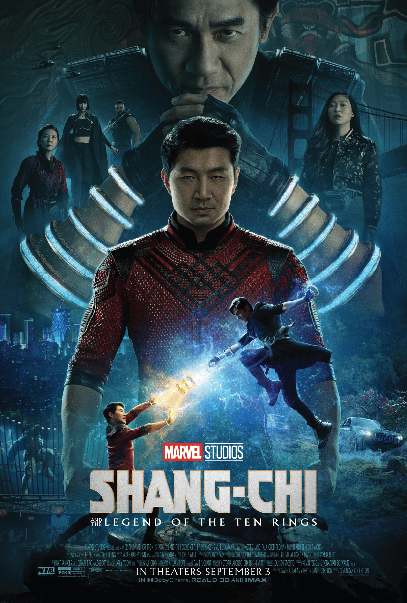
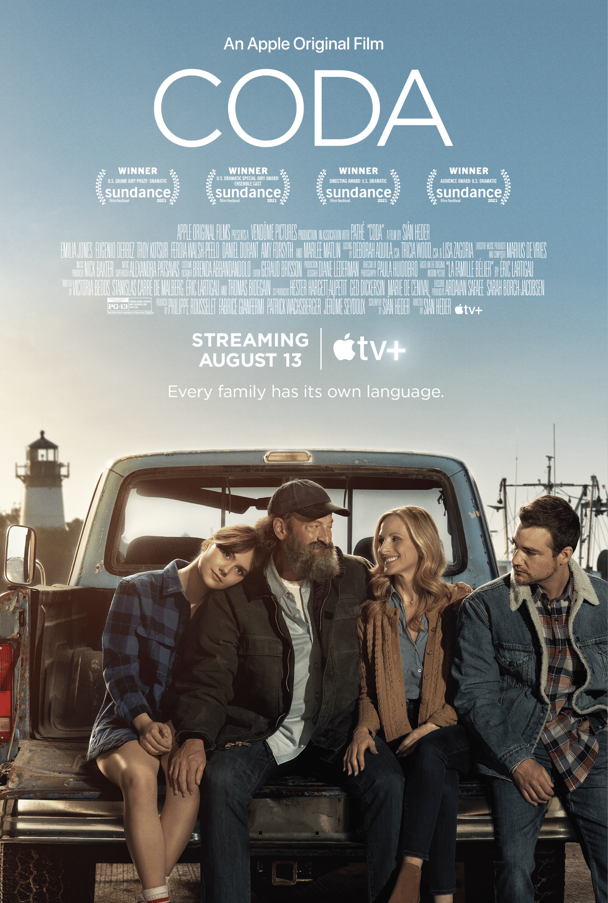
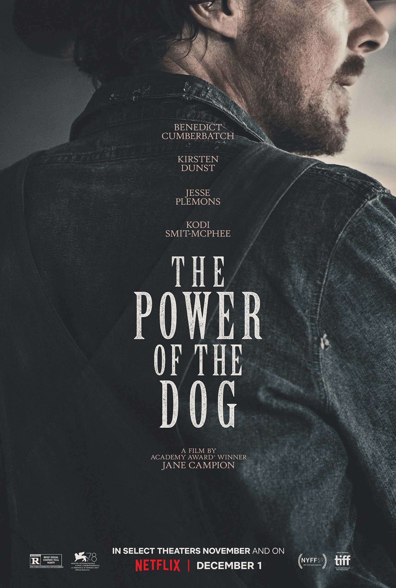
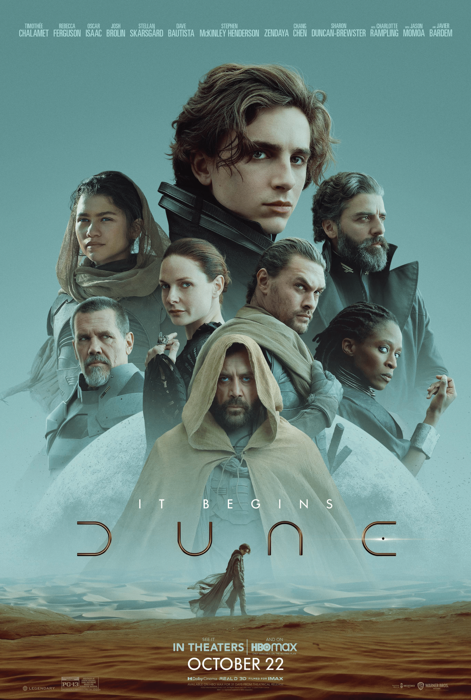
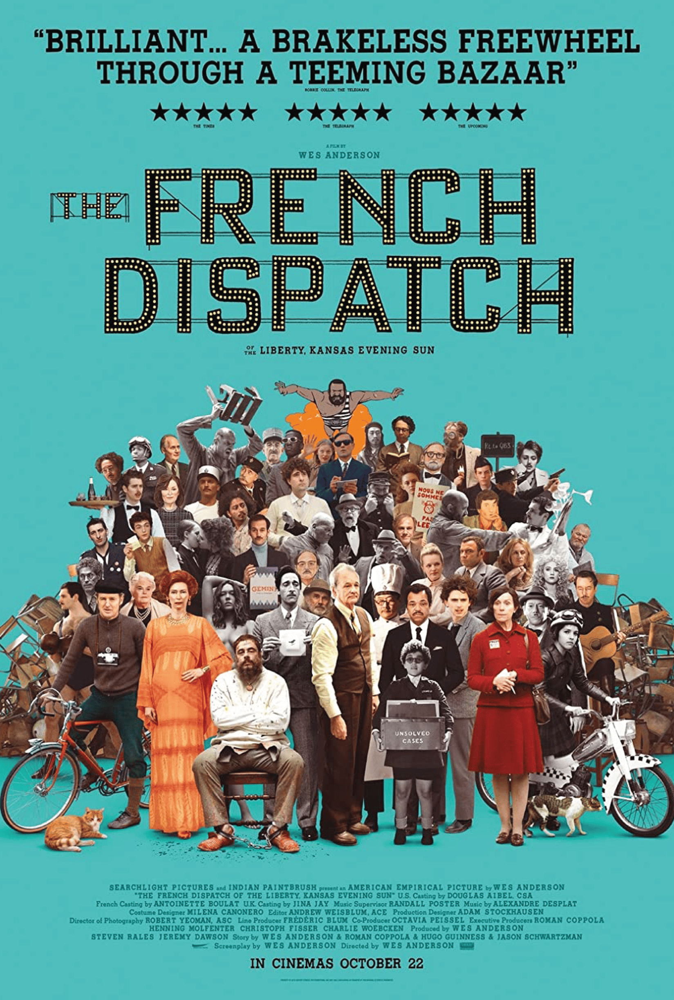
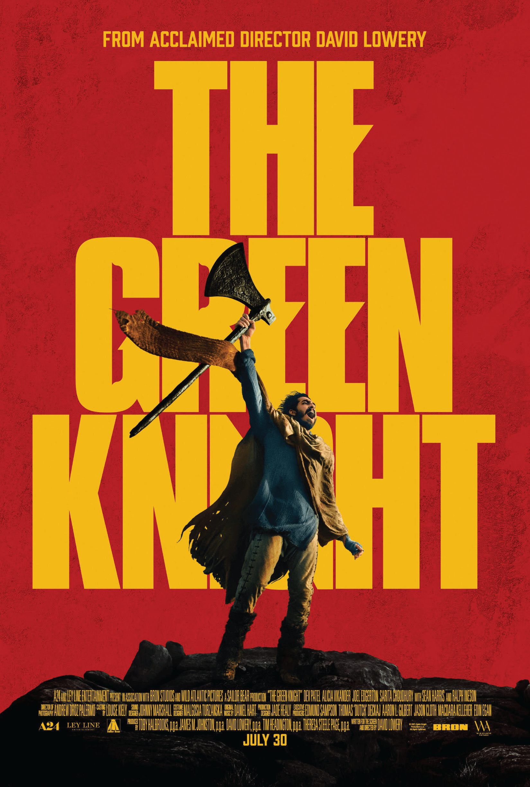

10
The Power of the Dog
This modern western is a character study, brought out by the cast’s great performances—especially by Benedict Cumberbatch as Phil. It takes a bit of time to get moving, but there’s plenty to like about the film. The direction is often intense with great cinematography. The sound design also deserves mentioning, as it increased the tension in most scenes, even when not much was happening on screen.
08
King Richard
Will Smith brings his best performance yet, with a biopic that somewhat changes up the usual formula. This is one of the best sport films as of late, highlighting a father who inspires rather than criticizes his children.
The entire cast delivers great performances and honest and intimate moments, and back-and-forth conversations among the family make you feel like you're in the room.
06
Shang-Chi and
the Legend of the
Ten Rings
Simu Liu brings dedication and humor to his portrayal of Shang-Chi, who is at odds with his father Wenwu, played by Hong Kong actor Tony Leung. At its core, it is a story about respecting where you come from while following your own path in this world, which anyone can relate to. Shang-Chi and the Legend of the Ten Rings showcases some of the best choregraphed fight sequences I’ve seen in a comic book movie to date. Despite excess exposition and spectacle in the final act, it was a fun watch, and I’m excited to see where they take the character Shang-Chi.
09
Spencer
This touching film sheds light on Princess Diana’s personal hardships and her struggle with becoming royalty and the restrictions that come with that. Spencer has beautiful cinematography and is shot on film, and the costume, hair, and set design make it all feel real. The film puts Diana’s anxiety in perspective, asking viewers to imagine having everything you would ever need at your fingertips yet feeling fenced in all the same.
07
The Green Knight
The Green Knight adapts the Arthurian legend through a fantastical adventure with stunning visuals, unique storytelling, and a worthwhile ending, despite being a slow burn overall. Dev Patel provides one of his best performances as Gawain, and the film is quite unforgettable.
At the end of last year, I reviewed the 10 best movies of 2020 as a form of creative escapism while being stuck at home. A year later, there’s still plenty to want to escape from—and lots of great movies to watch.
Below are my top 10 movie picks for this year—a mix of theatrical releases, video-on-demand, and streaming options—as well as a handful of movies I still plan to catch.
05
CODA
This coming-of-age story comes from the point of view of a teen whose family members are deaf and rely on her to be their interpreter. The film is full of phenomenal performances by actors who are deaf, and it is at times heartbreaking and yet still quite funny.
04
The French Dispatch
Whimsical, stylish, and somewhat chaotic in pace, this is quite possibly the most Wes Anderson film Wes Anderson has created. His filmmaking style is fully realized here, and while it may not be his best, it exhibits wonderful compositions filled with vibrant colors. It is a billet-doux to the arts, French culture, and journalism. The French Dispatch, as all of Anderson’s films, is full of talented actors and great performances, and if you enjoy his previous films, you are in for a treat.
03
Summer of Soul
Summer of Soul is a powerful documentary about the Harlem Cultural Festival in the summer of 1969 celebrating Black music and culture. Interviews with people who attended and played the festival reveal joy, anger, and pride. These poignant moments are juxtaposed with
never-before-seen footage of festival performances that awed and inspired the community.
02
Last Night in Soho
Edgar Wright tests his filmmaking ability by taking on this thrilling horror story. Wright’s stylish camera work and the 1960s style of cinema lure you into the world, and Thomasin McKenzie offers a fascinating performance as the lead, Eloise. The writing toward the end of the film is a bit messy and chaotic, but it is lots of fun.
01
Dune






Back to top
Timothée Chalamet excellently portrays the conflicted character Paul Atreides, who is torn between worlds, each with its own distinct look and feel depicted through stunning color and lighting. The special effects are impressive, and the movie is backed by a grand score. Dune isn’t just another popcorn movie; it has real ambition to tell an epic story while taking the time to focus on the characters.
Justin
designer

2021 movies that I’m still looking forward to seeing:
Belfast, C’mon C’mon, Licorice Pizza, Nightmare Alley, Spider-Man: No Way Home,
The Lost Daughter, The Tragedy of MacBeth, and West Side Story.